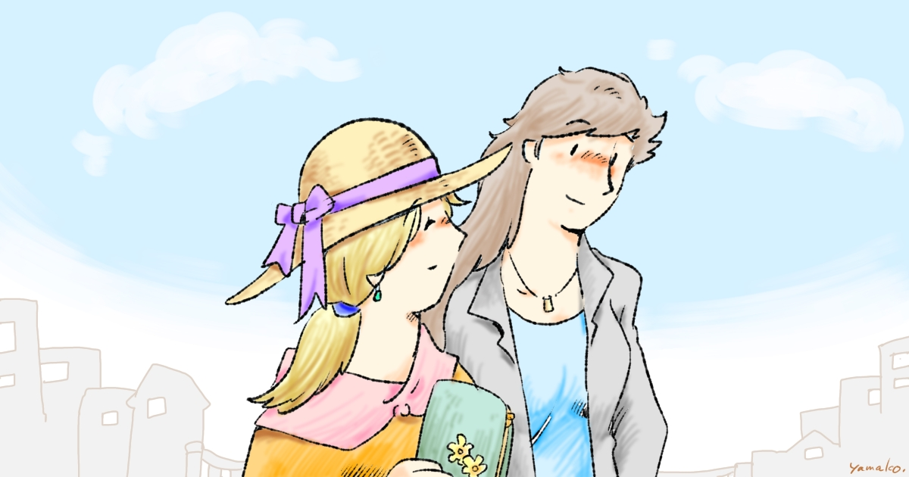

こんにちは、創作サークル「やまこ屋」です。まんがやイラストを中心に制作しています。
作品のご紹介
まんが「なかよし おねえさんたち」シリーズ
現在メインに制作している物語です。大人女性ふたりの暮らしと人生を描く、笑って泣けるまんがです。4コマまんが集と過去のストーリーまんが集があります。
活動場所
やまこ屋の活動はここでみられます。
- 📕 BASE, Xfolio 紙の本と DRM Free な電子本などが買えます。
- 📱 Kindle, BOOK☆WALKER 電子版。各種配信サービスでも配信しています。
- 🎥 Fedimovie 本サイト掲載のPVがみられます。猫やお絵かき動画も。
- 🎥 Youtube PVのみですが、上記がみられない方はこちらで。
- 📝 OFUSE 活動紹介ブログ。メンバーシップ登録すると公開前の作品がいちはやくお読みになれます。
- 🎨 Skeb 私になにか描いてほしい方はこちらへ。
- SNSです。活発な順に並べています。
お問い合わせ
ご連絡はメール (ywindish at yamako-ya.com) または fedibird.com の DM あてにお願いいたします。
当サイトのバナーです。リンクを貼るなどしてご自由にお使いください。

ここまでお読みいただきありがとうございます！あなたによいことがありますように。